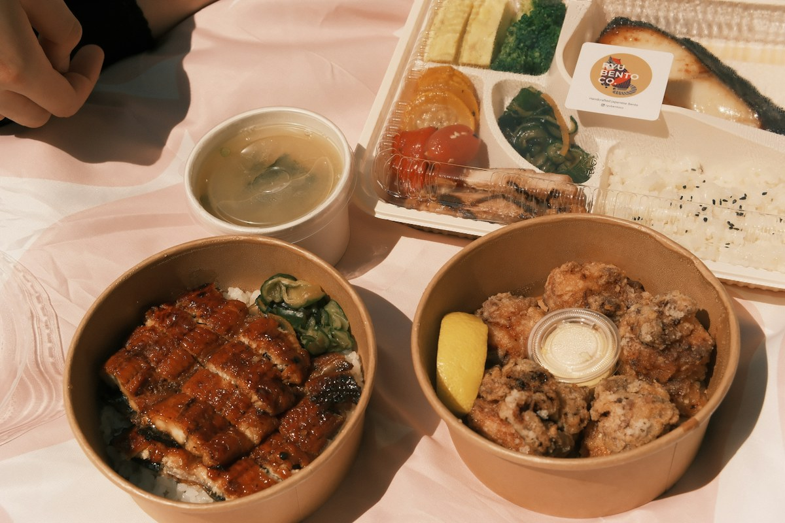

Karaage nature 唐揚げ
8,50 €Six pièces de cuisse marinée douze heures, double panure à la fécule. Une sauce au choix.
Frit minute, servi dans du papier kraft. Prix sur place et à emporter.
Six pièces de cuisse marinée douze heures, double panure à la fécule. Une sauce au choix.
Douze pièces à partager, deux sauces au choix, chou blanc mariné au sésame.
Bol de riz vinaigré, six pièces, œuf mollet, oignons nouveaux et tare tiède.
Ailes de poulet laquées au poivre et au sésame, à la façon de Nagoya. Six pièces.
Filet de poulet pané au panko, chou émincé, sauce tonkatsu, pain de mie japonais toasté au beurre.
Échine de porc panée, moutarde karashi, chou et sauce tonkatsu maison.
Poulet pané, mayonnaise au yuzu koshō, concombre mariné. Le plus relevé des trois.
Un sando au choix, une portion de frites au shichimi et une boisson.
Frites fraîches, sept épices japonaises et zeste d'orange séché.
Fèves de soja tièdes, sel de yuzu.
Dashi maison, tofu soyeux, wakame et ciboule.
Bol de riz japonais, sésame noir.
Sencha infusé à froid, sans sucre. Également en ramune, cola japonais ou bière Asahi.
Deux pièces au choix : matcha, sésame noir ou fraise.
Allergènes disponibles au comptoir. Le poulet est d'origine française.
Appelez avant de passer, on vous prépare le panier. Comptez dix minutes, tout est frit à la commande.
Nous trouver ›